JEFF STUDIO · GODOT 4.7 插件
用种子生成可以直接用的瓦片地图
自然地形、地牢、洞穴一键生成；方形或六角网格，俯视或等角 2.5D，像素风与手绘风随时切换。生成后还能手绘、锁定、再生成。
Procedural tile maps for Godot — seeds, square & hex grids, isometric height blocks, pixel and hand-painted styles.
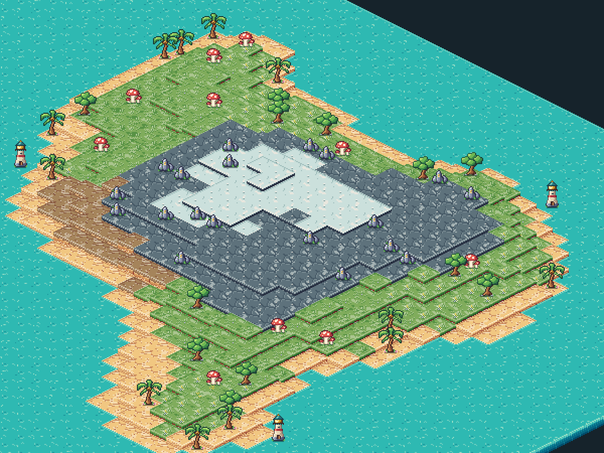
功能
编辑器里有独立的 Map Studio 工作区；生成、修改、保存和导出场景都在这里完成。运行时也可以用同一套 API 在游戏里实时生成。
三种生成器
自然地形（海岛、沙滩、山地、雪地）、房间地牢（最小生成树 + A* 走廊）、细胞自动机洞穴，结构保证连通。
方形与六角
方形、尖顶六角、平顶六角三种网格，与 Godot 原生 TileMapLayer 坐标一致。
等角 2.5D 地块
0–16 层高度，自动生成侧面与底座，内部被遮挡的侧面自动隐藏。也可切换为俯视。
像素风 · 手绘风
切换风格只重新渲染，不改变地图格子、手绘修改、锁定和物品位置。
种子与锁定
相同种子得到相同地图。用画笔改地形、升降高度、放置物品，锁定的区域在重新生成时保留。
程序化材质
草地、沙土、岩石、水面、石砖可调配色、密度、尺度、像素步长，导出无缝 PNG 和单块地块图。
导入你的图集
绑定 PNG 图集或 TileSet：按地形、用途、边掩码匹配瓦片，带权重的确定性随机。
导出与运行时
一键应用到当前场景（可撤销），或烘焙成独立场景；JeffMap2D 节点支持运行时生成和查询。
同一张地图，两种画风
像素风在与屏幕对齐的像素网格上用代码绘制，地表、侧面和物品共用同一像素尺寸；手绘风使用配套绘制的材质与物品。切换时地图内容完全不变。
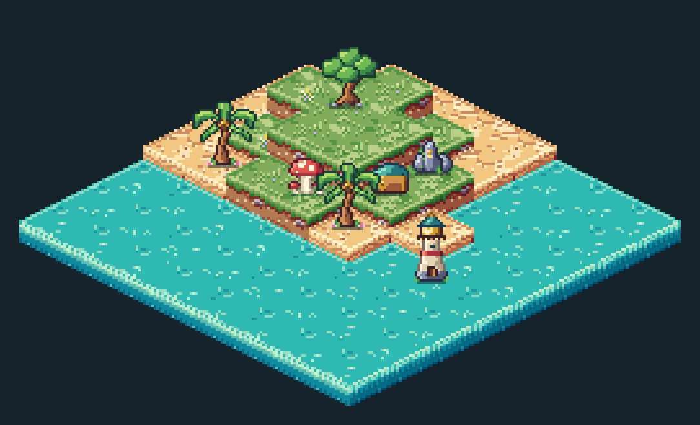
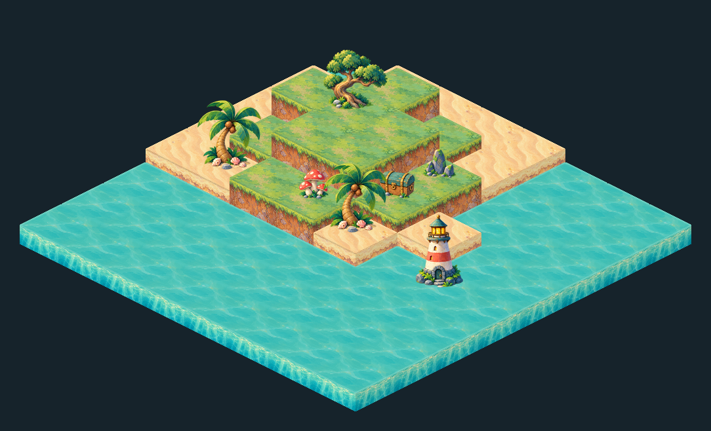
画廊
以下图片都由插件在后台直接合成（CPU 合成预览，不是 GPU 截图）。
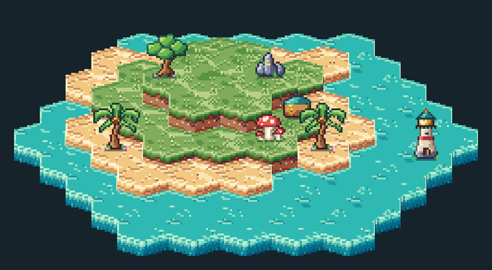
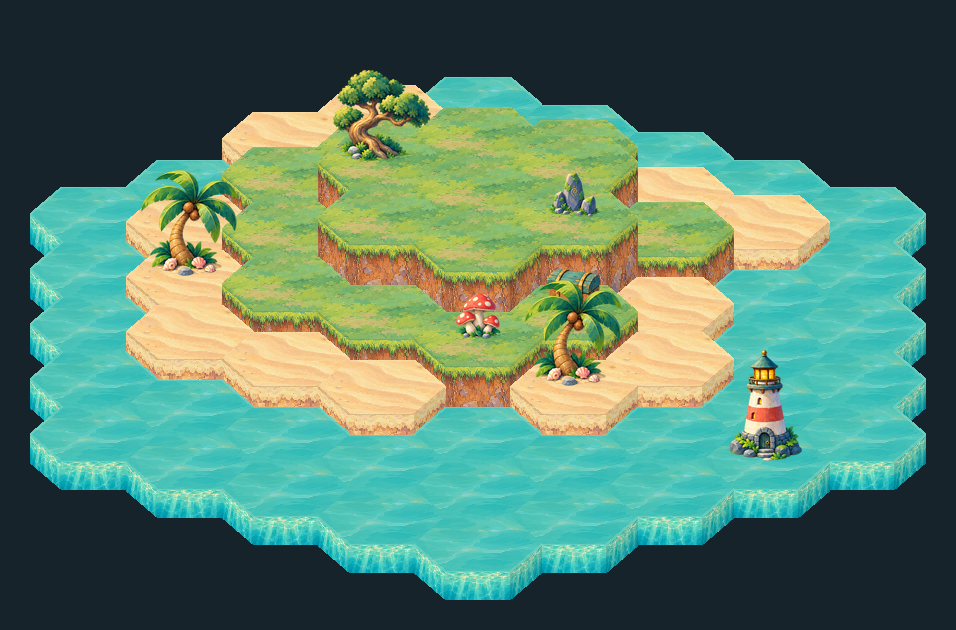
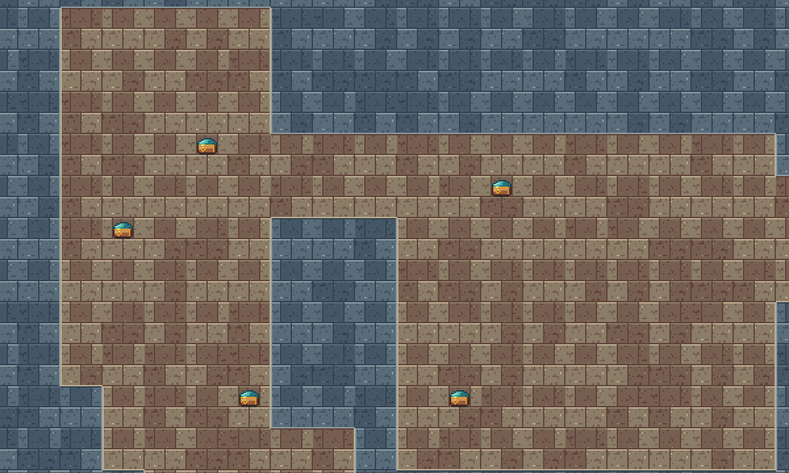
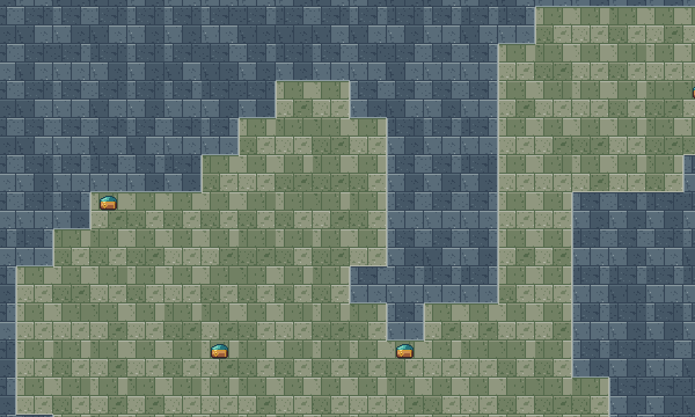
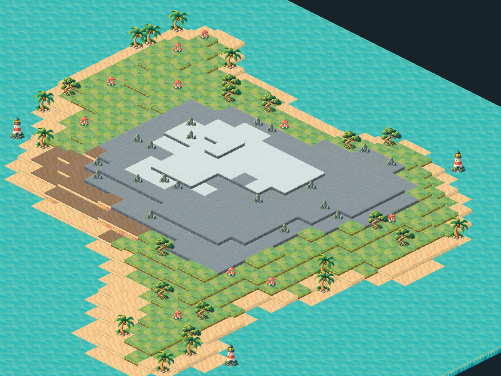
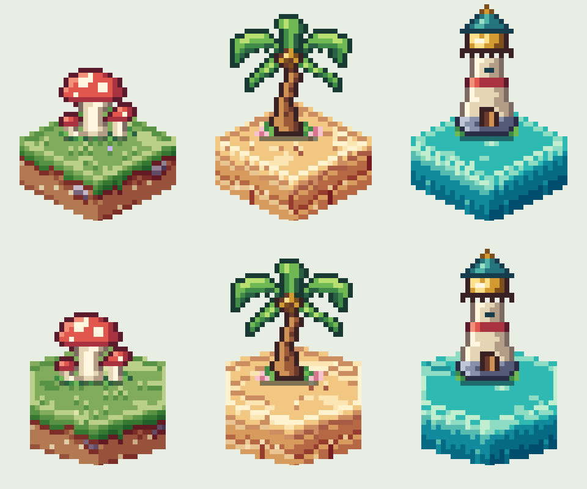
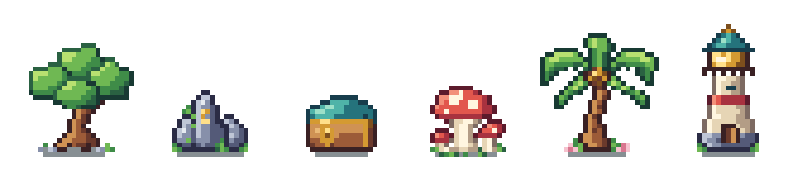
美术管线：概念图 + 规范 + 代码
地形外观正在迁移到“规范驱动”：美术在 Aseprite 里定色阶和图案，规范文件定规则和随机范围，代码按种子绘制。像素风草地已经完成，其余地形逐步迁移。
概念图
色阶切片、图案切片和目标样板。图案直接用真实颜色绘制，导入时自动换算成色阶，换主色会跟着变色。
外观规范
可调参数的范围、四种草地“情绪”、区域大小、图案数量，都在 Godot 检查器里编辑。
按种子绘制
同样的规范、参数和种子得到逐字节相同的图；任意两个变体相邻都无接缝，有自动测试保证。
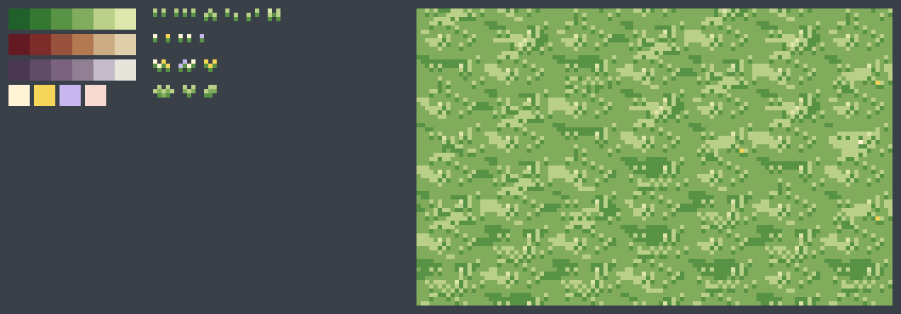
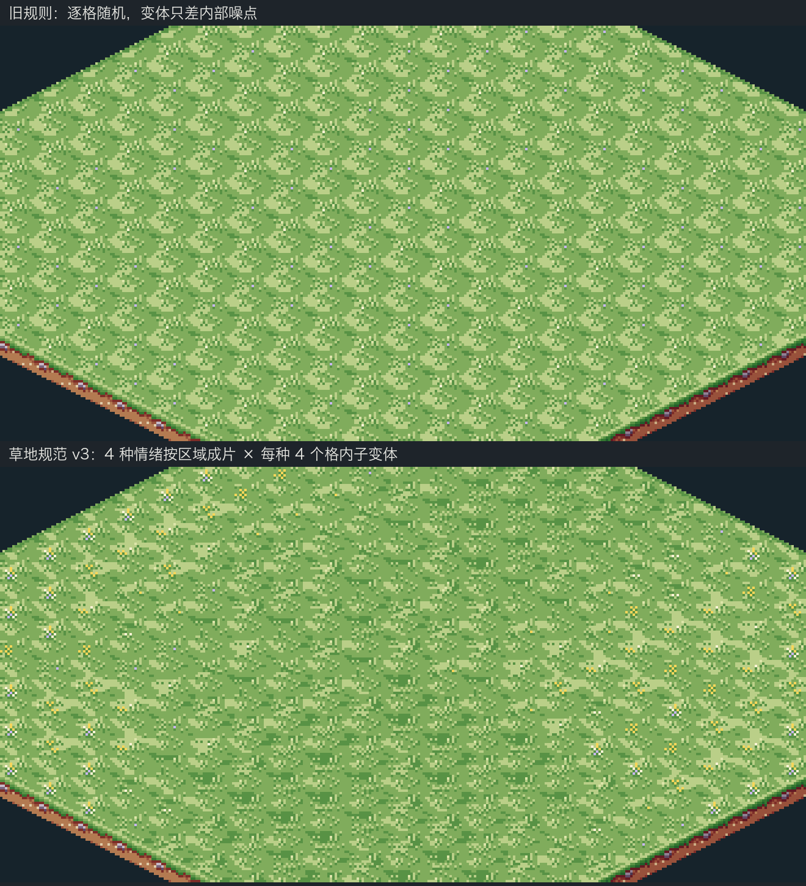
快速开始
需要 Godot 4.7.2 标准版（不需要 .NET）。
- 下载或克隆仓库，把
addons/jeff_map_studio复制到你的项目中。 - 打开 项目设置 → 插件，启用 Jeff Map Studio。
- 编辑器顶部切换到 Map Studio，选择左侧预设或调整参数，点击 生成地图。
- 用画笔修改、锁定区域，再保存地图、导出场景，或 应用到当前场景。
也可以直接用 Godot 打开整个仓库：插件已在演示工程中启用，按 F5 运行独立工作区演示。
extends Node2D
@onready var map: JeffMap2D = $JeffMap2D
func _ready() -> void:
map.generation_completed.connect(_map_ready)
var settings := MapProfile.new()
settings.seed_value = 12345
settings.grid = MapProfile.Grid.HEX
settings.projection = MapProfile.ProjectionMode.ISOMETRIC
settings.width = 128
settings.height = 128
map.generate(settings)
func _map_ready(data: MapData) -> void:
# 地形、高度、物品
print(map.get_cell(Vector2i(5, 5)))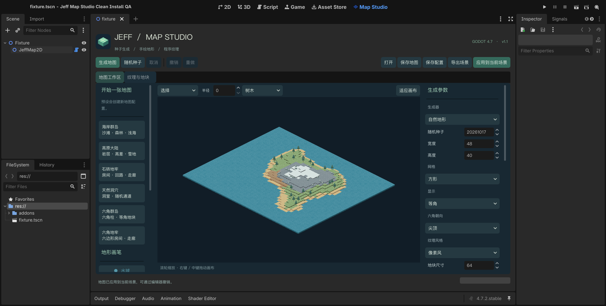